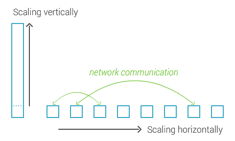
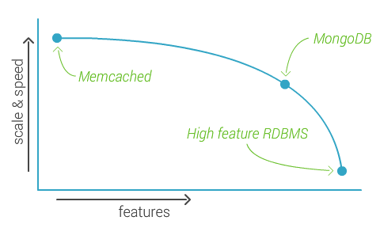

Repetition : Websocket theory
- HTML with 'Upgrade' parameter,
- "Handshake" to validate identity,
- Full duplex
- Constant packet stream of 4-16 bytes.
Repetition : Handshake theory
- The client sends a key and version,
- The server bas64 encodes and SHA1 encrypts this key,
- Sends this back as an accept key,
- The Full duplex stream has been opened!
Repetition : Socket.io practise
Server side sockets.
// Require the module socket.io and initiate it on port 80
var io = require('socket.io').listen(80);
// Event handler for when someone connects to the socket
io.sockets.on('connection', function (socket) {
// Return an event name and object
socket.emit('news', { hello: 'world' });
// Other event listener
socket.on('my other event', function (data) {
console.log(data);
});
});
Repetition : Socket.io practise
Client side sockets.
And now, get ready for...

Why should you sit here ...
and listen to this crap?
Is it dark propaganda?
Are the russians behind this evil technology?
Because
relational databases are ancient
and you are probably not...
The philosophy
How?
By leaving out unnecessary features
So what is it?
A document oriented database
- Document Database
Documents (objects) map nicely to programming language data types.
Embedded documents and arrays reduce need for joins.
Dynamic schema makes polymorphism easier. - High Performance
Embedding makes reads and writes fast.
Indexes can include keys from embedded documents and arrays.
Optional streaming writes (no acknowledgments). - High Availability
Replicated servers with automatic master failover. - Easy Scalability
Automatic sharding distributes collection data across machines.
Eventually-consistent reads can be distributed over replicated servers.
In Mongo we call:
- tables; collections,
- select; find,
- create; insert,
- update; update,
- delete; remove.
More about queries next week...
Application first
- Non-relational database
Store the data where it should be - Schema-less design
Polymorphism rules! - Document oriented
Just throw the object in there - No joins or complications
Stop overthinking crap!
The difference?

Assignment
Sort of...
- Install MongoDB or Start our Vagrant box
- Use the command: mongo --version, to print the current version
Everything is JSON
- It's a document
- with Key : Value pairs
- Keys are always in String format
{
"name" : "Jimmy",
"age" : 24,
"presenting" : {
"mongodb" : true,
}
}
Values can either be:
- Number
- String
- Boolean
- Array
- Object (document)
- null
Under the hood
Everything is BSON
Because...
- BSON is fast scannable
- JSON is just strings (every character needs examination)
- BOSN is a continuous length of values
Good to know,
But not something you will be needing on a daily bases.
The Mongo Shell
Start it by commanding:
$ mongo "[host]/[database]"
The Mongo Shell
Useful commands
# Access a database
> use "[database name]"
# Show databases
> show dbs
# Show collections
> show collections
# Help with everything
> help
Assignment : Import data and verify
- Download products.json from our github: http://goo.gl/Brghdg
- Use mongoimport to import the json to the products collection in database pcat
$ mongoimport --db "[database]" --collection "[collection]" --file "[file]"
$ mongo
> use pcat
> db.products.count() # 11
> db.products.find() # unreadable mess
> db.products.find().pretty()